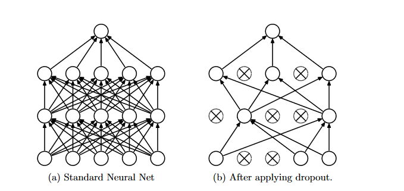
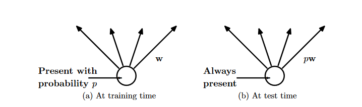

Originally published at Commonlounge.
This tutorial is about widely used regularization technique for neural networks called Dropout. This tutorial intends to explain what is overfitting and regularization, what is dropout, why do we need dropout, and why it improves the performance of neural networks.
Neural Networks especially Deep Neural Networks are very powerful machine learning systems. They are the backbones of many (almost all) machine learning systems in production. The great learning ability of Neural Networks comes with a serious problem of "Overfitting". Overfitting is a very important topic in machine learning, it arises when our learning system performs well on training data but do not perform well on test data. That is, our learning system is not robust. In other words, our learning system has memorized the training data and that's why it performs well on training data. And since our learning system hasn't learned important patterns and features, it fails to perform well on the test data. Now, you may ask, how do we tacke it? The answer is- Regularization. Regularization intends to introduce Generalization in machine learning systems. If you know about Linear Regression and similar algorithms then you are likely to know about L2 and L1 regularization. Dropout is a regularization technique widely used in (Deep) Neural Networks. It improves the performance of the learning system (i.e Neural Network) on various tasks of computer vision, natural language processing and speech. In the following sections, we will see how dropout works, why it improves the performance of a neural network and will conclude this tutorial by implementing a simple neural network with dropout using TensorFlow.
Dropout is a regularization technique where randomly selected neurons along with their connections are ignored during training (both forward and backward pass). A neuron (or a unit) is dropped out with probability 1-p, in other words, a neuron is kept with probability p. This way, a reduced neural network will be left. Here, neurons to be ignored are selected randomly with probability 1-p. As mentioned in the original paper, 0.5 for p seems to work best on wide range of tasks. In other words, we drop out the neurons with probability 0.5 (1-0.5). By drop out I mean setting output of randomly selected neurons to zero. In case of input neurons, optimal probability of retention is usually closer to 1. Here is how dropped-out neural network looks like:
At test time, we do not ignore any neurons, that is, we do not apply dropout during test time. Instead, all neurons will be multiplied by p. Following is the figure from the original paper that shows the same.
A logical question to ask now is that why dropout works, why it improves the performance of neural networks. As we discussed earlier, dropout is a regularization technique which prevents overfitting. In a fully connected neural network, neurons develop co-dependency amongst each other during training process which leads model to the overfitting. In contrast, when we use dropout a neuron cannot rely on other neurons and this is how it reduces co-adaptations of neurons.
Since this post is about dropout, I assume readers know about neural networks and a little bit about tensorflow. I will try to make the code self-contained. Here, I use the standard method of developing and training machine learning models. Please note, there is a lot of room for improvement and optimization in a below given code. But the sole purpose of this code is to demonstrate how to use dropout in tensorflow. We will implement a neural network with two hidden layers and will use dropout on both of these layers. Applying dropout on layers with some probability means, few randomly selected neurons in this layer will be ignored (set to zero).
#import necessary libraries
import tensorflow as tf
from tensorflow.examples.tutorials.mnist import input_data
#we will be using mnist dataset
mnist = input_data.read_data_sets('MNIST_data', one_hot=True)
#create placeholders for the input and output
X = tf.placeholder(tf.float32, shape=[None,784])
y = tf.placeholder(tf.float32, shape=[None,10])
#parameters of the model
W1 = tf.Variable(tf.truncated_normal([784,200], stddev=0.1))
b1 = tf.Variable(tf.ones([200]))
W2 = tf.Variable(tf.truncated_normal([200,100], stddev=0.1))
b2 = tf.Variable(tf.ones([100]))
W3 = tf.Variable(tf.truncated_normal([100,10], stddev=0.1))
b3 = tf.Variable(tf.ones([10]))
#"p"-probability that a neuron is kept
keep_prob = tf.placeholder(tf.float32)
y1 = tf.nn.relu(tf.add(tf.matmul(X, W1),b1))
y1_dropout = tf.nn.dropout(y1, keep_prob) #apply dropout to each layer
y2 = tf.nn.relu(tf.add(tf.matmul(y1, W2), b2))
y2_dropout = tf.nn.dropout(y2, keep_prob)
y_logits = tf.add(tf.matmul(y2, W3), b3)
y_hat = tf.nn.softmax(y_logits)
#cost function
cost = tf.reduce_mean(tf.nn.softmax_cross_entropy_with_logits(logits=y_logits, labels=y))
#optimizer, we will use Adam
train_step = tf.train.AdamOptimizer(0.001).minimize(cost)
#accuracy
true_pred = tf.equal(tf.argmax(y_hat,1), tf.argmax(y,1))
accuracy = tf.reduce_mean(tf.cast(true_pred, tf.float32))
#train the model
sess = tf.Session()
init = tf.global_variables_initializer()
sess.run(init)
for i in range(1000):
batch_X, batch_y = mnist.train.next_batch(128)
sess.run(train_step, {X:batch_X, y:batch_y, keep_prob:0.5})
if i % 100 == 0 : #print accuracy and cost after every 100 iterations
acc , cost_v = sess.run([accuracy, cost], {X:batch_X, y:batch_y, keep_prob: 1})
print("Iteration number:",i)
print("Accuracy",acc)
print("Cost", cost_v)
Please note, I haven't added a code snippet to test accuracy on test data. As you might have noticed, it is very easy to implement dropout in tensorflow. In fact, we do not need to know all the theories and mathematics behind it in order to use it in tensorflow. Here, I got approximately 95% accuracy. I hope you now understand the dropout technique, how it works and how to implement it using tensorflow.